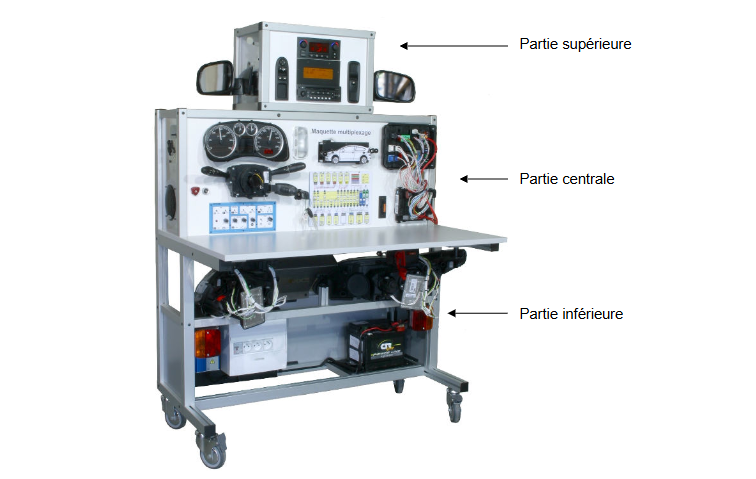

Bienvenue sur notre site
Le projet propose un système d'identification automatique des messages CAN permettant de suivre l'évolution des données dans un véhicule. Des graphs ainsi que la signification de chaque message sont accessible.
Descriptif de la maquette
La maquette représente un véhicule de dernière génération, avec des éléments de Citroën C4 (C5Restylée) et de Peugeot 307 « Full CAN ». Sur cette maquette vous retrouverez les réseaux de communication du constructeur : CAN High Speed, CAN Low Speed et LIN. Cette maquette est livrée avec le logiciel MUXTRACE et un boîtier USB-MUX-4C2L pour la visualisation, l’analyse et l’émission de trames sur les réseaux du système.
À Propos
Ressources utilisées dans le projet :
- Maquette Exxotest
- Rasbperry Pi
- VSCM USB-CAN
- MiniPC sous Linux
- PostgreSQL
- Embarcadero